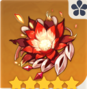
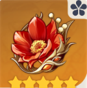
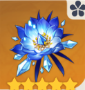
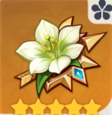
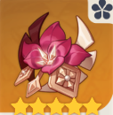

The artifact pages will explain thoroughly how to set the proper ones for the characters, an explanation of the artifact details, how to use or combo the artifact’s ability properly, and how to stack artifact buffs by switching characters to get the maximum damage dealt by the team’s DPS. Artifacts are important for a team’s damage dealing and tanking capabilities, and there are so many ways to combine the artifacts’ passive for the team, it all depends on the team composition and who is the target character to get all the buffs (Most likely DPS characters).
- Pyro 
- Cryo 
- Anemo 
Crimson witch of flames : 2-set increases pyro damage bonus by 15%, 4-set increases overload and burning damage by 40%, vaporize and melt by 15%. Using elemental skill increases the 2-set bonus by 50% of its starting value (7.5%) max 3 stacks. Charge elemental skill 3 times before elemental burst for maximum damage, this is specialized for Diluc. Other pyro characters may play carefreely.
Lavawalker : For those of you who are a huge fan of pyro, then this artifact is made for you. There aren’t any strategies for this artifact since the 2-set increases pyro resistance by 40% and the 4-set increases damage dealt by 35% to opponents that are affected with the ‘pyro’ element.

Blizzard strayer : 2 sets of this artifact gains 15% cryo dmg bonus, and 4 sets of this gives you 20% crit rate when an opponent is affected by the ‘cryo’ element. It also gives an additional 20% crit rate bonus if an opponent is frozen.
Viridescent venerer : 2 sets of this artifact gives 15% anemo damage bonus. 4 sets of this gives you 60% increase on swirl damage and decreases enemy’s elemental resistances by 40% for 10s if infused in the swirl.